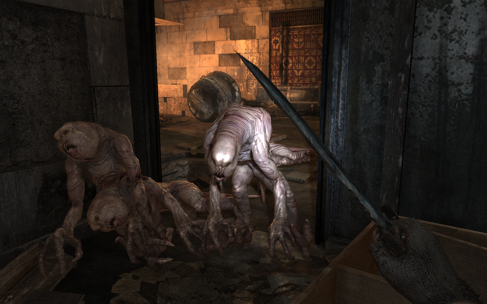
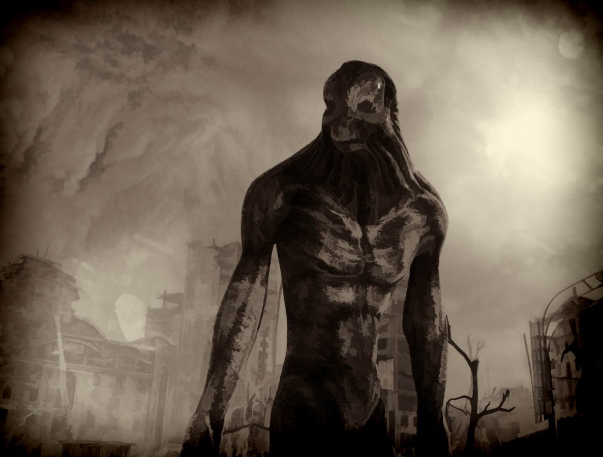

•Мутанты метро• |
|---|
|
Мутант-падальщик, пожирающий трупы. Группы людей они стараются обходить или при их виде сразу прячутся в норы. Однако с лёгкостью нападают на неудачно зашедшего одинокого путника. Следует быть осторожным и не упасть в их норы, поскольку в таком случае Артём неизбежно погибнет. Обитают в основном в туннелях и заброшенных станциях, однако встречаются и на поверхности. Скорее всего, произошли от кошек. Отдалённо напоминают стражей, хотя у них присутствует в малых количествах шерсть и они значительно меньше по своим размерам. Доподлинно неизвестно, от какого существа произошёл данный вид мутантов, но, судя по записям Артёма, Чёрные были созданы в качестве «суперсолдат» в правительственных бункерах Метро-2 за некоторое время до ядерной катастрофы как последующая ступень эволюции человека. Сухой, отчим Артёма с ВДНХ, называет Чёрных homo novus («человек новый»). Согласно вырезанным и неозвученным диалогам из DLC «Башня», чёрных создавали военные в бункере Д-6 в рамках проекта «Темнота», пока однажды один биолог не выпустил несколько экземпляров из вивариума.  |